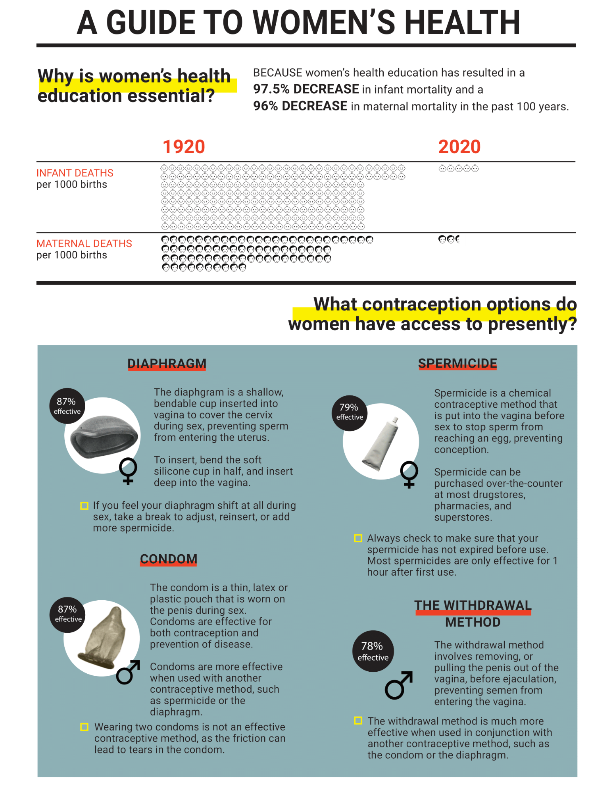
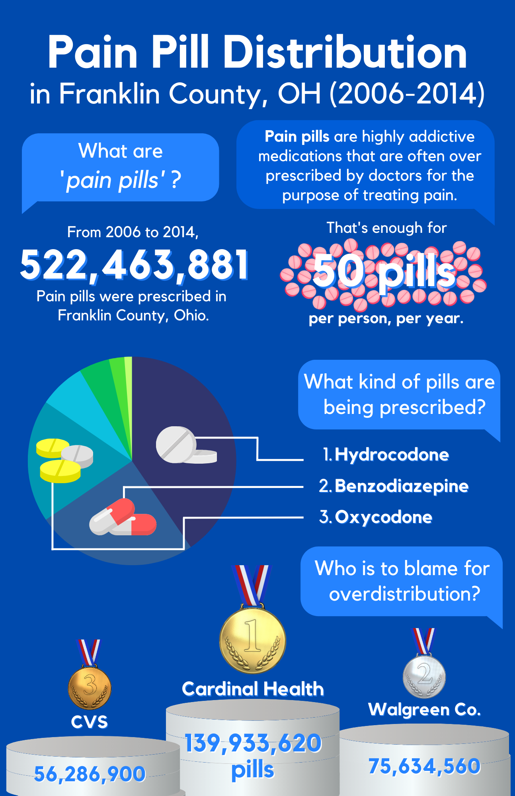

Visual Design
As a data analyst, effective and elegant visual design is always something I am seeking out, whether it's in my data visualizations, the presentation decks I create, or the flyers I make for music events outside of work. I continually work to refine my design skills, both professionally and in my free-time.
100 Years Information Design Project
If you had the chance to travel back in time to 1923, what would you want to tell the people of the past about? And how would you effectively communicate that information? This was the question prompted to my Design 5505 class by our instructor Yvette Shen, an esteemed informational designer. Each individual in our class was prompted with this question, and we brainstormed as a group to decide which five topics would bring the most value to the lives of those in 1923. My suggested topic, and the one that I was selected to create my design for, was contraception. This topic was just beginning to become familiar to women in the 1920's, but it was still considered taboo by the majority of people. I wanted to share the statistics and facts around contraception that we know to be the truth in the present day, empowering the women of the 1920's to take hold of their bodily autonomy.
The informational pamphlet was designed in Adobe Illustrator, and was designed with the intent of being easily visually and conceptually understood by the people of 1923. The final pamphlet consisted of five informational topics, as well as an initial summary, of which were printed onto a large piece of paper and folded to create a mini-magazine reading experience. This project not only challenged my visual design skills, but it also really appealed to my sociological interests. I enjoyed considering what information design of the 1920's was like, and I tried to format my design with such considerations in mind. I also had to factor in the societal perception of contraception at the time, as although it was used by many women of the time, it was still considered extremely progressive and had not yet gone mainstream. By focusing the content of my visual around the health of women, I could draw in readers with empowering facts and educational resources, without dettering those who are skeptical of not-yet socially acceptable forms of birth control.
To see more information about this project, and see the full pamphlet, check out this link.
Franklin County Pain Pill Infographic
If you had the chance to travel back in time to 1923, what would you want to tell the people of the past about? And how would you effectively communicate that information? This was the question prompted to my Design 5505 class by our instructor Yvette Shen, an esteemed informational designer. Each individual in our class was prompted with this question, and we brainstormed as a group to decide which five topics would bring the most value to the lives of those in 1923. My suggested topic, and the one that I was selected to create my design for, was contraception. This topic was just beginning to become familiar to women in the 1920's, but it was still considered taboo by the majority of people. I wanted to share the statistics and facts around contraception that we know to be the truth in the present day, empowering the women of the 1920's to take hold of their bodily autonomy.
The informational pamphlet was designed in Adobe Illustrator, and was designed with the intent of being easily visually and conceptually understood by the people of 1923. The final pamphlet consisted of five informational topics, as well as an initial summary, of which were printed onto a large piece of paper and folded to create a mini-magazine reading experience. This project not only challenged my visual design skills, but it also really appealed to my sociological interests. I enjoyed considering what information design of the 1920's was like, and I tried to format my design with such considerations in mind. I also had to factor in the societal perception of contraception at the time, as although it was used by many women of the time, it was still considered extremely progressive and had not yet gone mainstream. By focusing the content of my visual around the health of women, I could draw in readers with empowering facts and educational resources, without dettering those who are skeptical of not-yet socially acceptable forms of birth control.
To see more information about this project, and see the full pamphlet, check out this link.